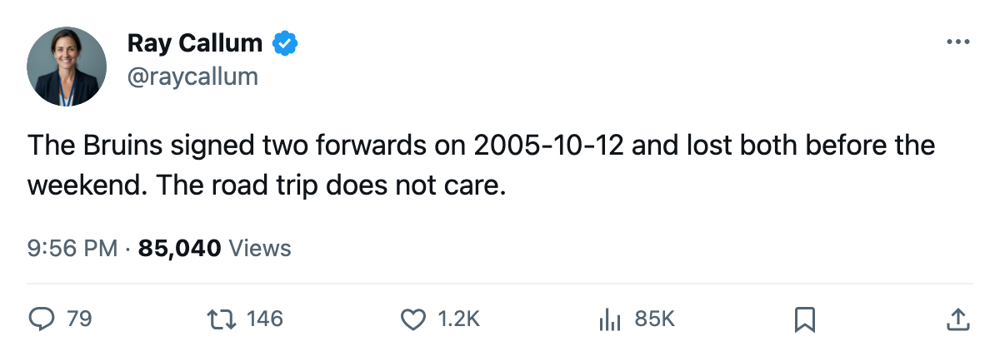
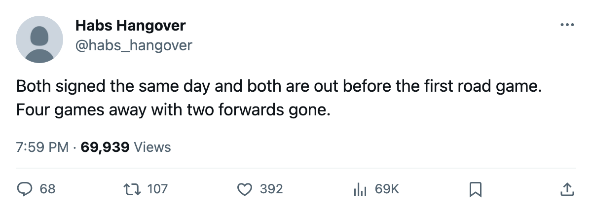

Injury Report: Boston Lose Samsonov (Neck) and Huml (Elbow) Before a Four-Game Trip
Samsonov is targeted for 2005-11-09, Huml for 2005-10-20, and the Bruins open in Vancouver tonight.
 Ray CallumSenior correspondent · Home Ice Network
Ray CallumSenior correspondent · Home Ice Network Boston Bruins signed
Boston Bruins signed  Sergei Samsonov87 for $355,250 on 2005-10-12. It signed Ivan Huml77 the same day for $277,110. By the weekend both were out, and the club begins a four-game road trip tonight at
Sergei Samsonov87 for $355,250 on 2005-10-12. It signed Ivan Huml77 the same day for $277,110. By the weekend both were out, and the club begins a four-game road trip tonight at  Vancouver Canucks.
Vancouver Canucks.
Boston Bruins are the only club with two new names. The league infirmary holds 6 men, and the Bruins' ledger is the busiest: 3 spells this season and 28 days lost, behind only the  New York Rangers (33) and
New York Rangers (33) and  Florida Panthers (32).
Florida Panthers (32).
Samsonov's neck was recorded between 2005-10-15 and 2005-10-16, with a return of 2005-11-09. Huml's elbow carries the same window and a firm 2005-10-20. No cause is on the record for either man.
| player | club | part | return |
|---|---|---|---|
| Sergei Samsonov | Boston Bruins | neck | 2005-11-09 |
| Ivan Huml | Boston Bruins | elbow | 2005-10-20 |
 Jaromir Jagr84 Jaromir Jagr84 |  Washington Capitals Washington Capitals | elbow | 2005-10-17 |
 Branislav Mezei73 Branislav Mezei73 | Florida Panthers | leg | 2005-11-13 |
| Steve Ott66 |  Dallas Stars Dallas Stars | concussion | 2005-11-05 |
 Dale Purinton64 Dale Purinton64 | New York Rangers | back | 2005-11-17 |
Boston Bruins have no room in the schedule. The Bruins play at  Calgary Flames on 2005-10-17, at
Calgary Flames on 2005-10-17, at  Edmonton Oilers on 2005-10-19 and at
Edmonton Oilers on 2005-10-19 and at  Toronto Maple Leafs on 2005-10-21.
Toronto Maple Leafs on 2005-10-21.
Jaromir Jagr is next due back. An elbow keeps him out of the Washington Capitals lineup until 2005-10-17. Branislav Mezei waits longest of the six, to 2005-11-13, with a leg. Steve Ott is out to 2005-11-05 with a concussion, Dale Purinton to 2005-11-17 with a back.
Boston's 3 spells lead the league. The Rangers carry the most lost time, 33 days, with 2 names.

